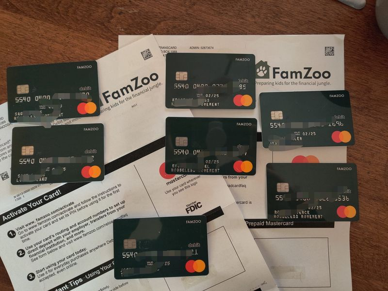

Mobile uploads
It's important to note that I'm not trying to change anyone. I am no longer convinced that living in an overpriced box that takes far too much of our income is a better way of living than someone who chooses to live with zero rent cost.
THAT SAID, most homeless people in America did not choose this life. They were forced into it by brutal circumstances.
THAT SAID, many houseless people experience a form of freedom that most of us will never dare experience.
So, I'm always looking at ways to help our houseless neighbors try ideas that might make their lives a little easier. Sometimes my ideas help. Sometimes they don't.
This is a photo of a prepaid card system meant for families. Each card will go to an initial group of houseless people that will enable me to instantly transfer money from the "parent" account to the particular "child".
I can turn off cards if they get lost or stolen. Other people can send money to our charity and I can instantly send it to the person you wanted to pay.
This gives an easy way to pay houseless people for work you had them do. And it gives people an option to a lifestyle that is normally entirely cash based.
I'll let you know how it goes.